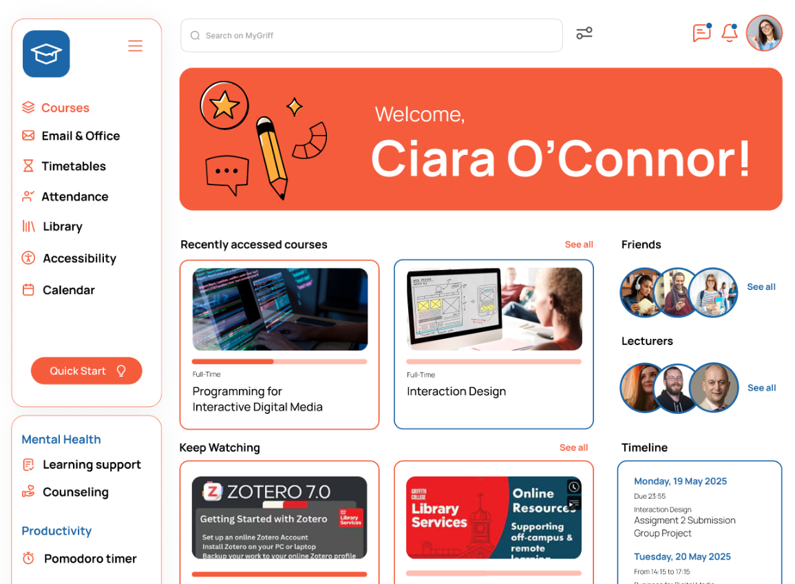
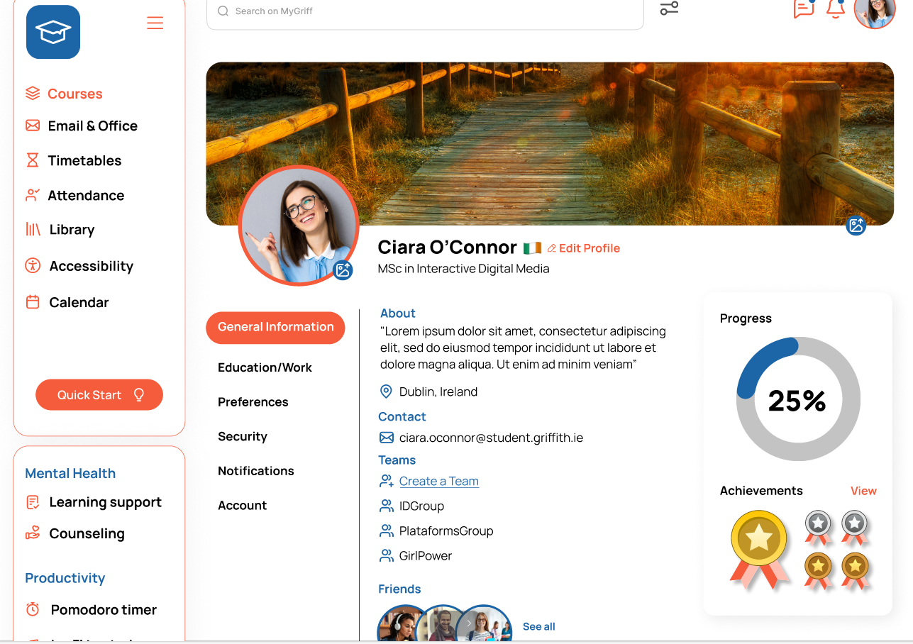
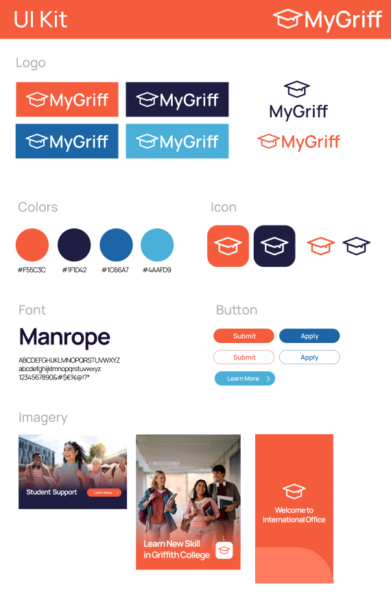

Problem
Scattered navigation: courses/timetables/grades/support in silos, poor feedback, inconsistent UI and the lack of productivity tools created stress for busy postgrads like our user persona "Alex" (28, full-time MSc, balancing work/studies).
My Research: Competitor Analysis
Analyzed 6 platforms to identify edtech trends 2025.
Canvas LMS: Custom dashboards, Zoom integration
Duolingo: Gamification (badges, progress paths)
Google Classroom: Icon grids, task breadcrumbs
LinkedIn Learning: Career journey tracking
Jira: Quick Start guides, notification filters
Key Market Trends I Identified
- Goal-directed design: "What's due today" first, To do lists
- Gamification: Progress rings + badges boost retention 40%
- Personalization: Custom dashboards reduce cognitive load
- Wellness integration: Pomodoro/Lo-fi = 25% more focus time
Solution: Integrating Features
Fixed sidebar (Courses/Calendar/Attendance) → Jira consistency
Progress rings + trophies → Duolingo motivation
Quick Start + timeline → LinkedIn career paths
Pomodoro/Lo-fi wellness → Modern productivity apps
Responsive dark mode → 2025 accessibility standards
Key Screens


